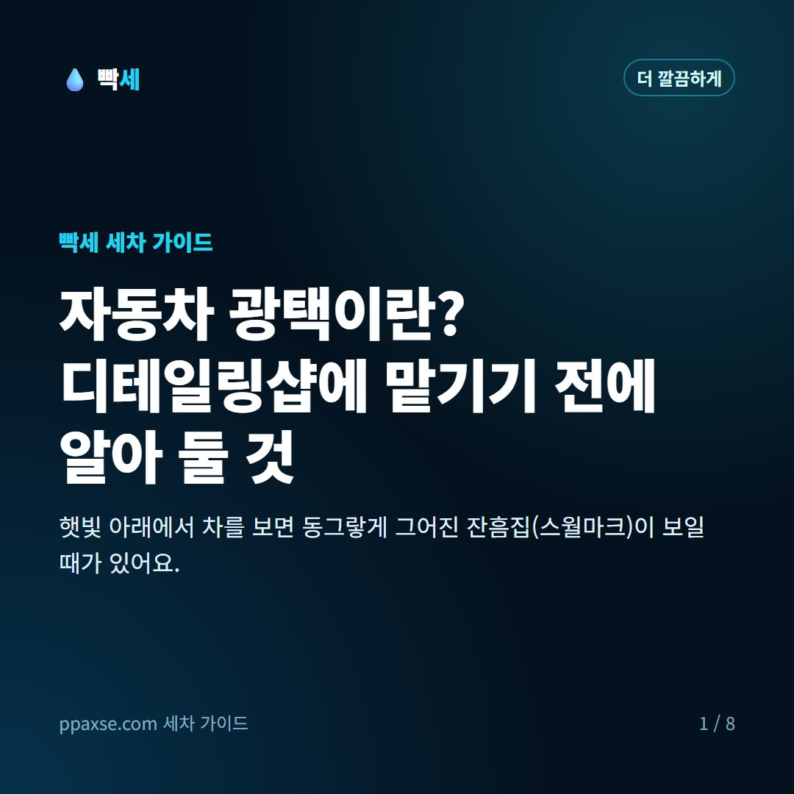
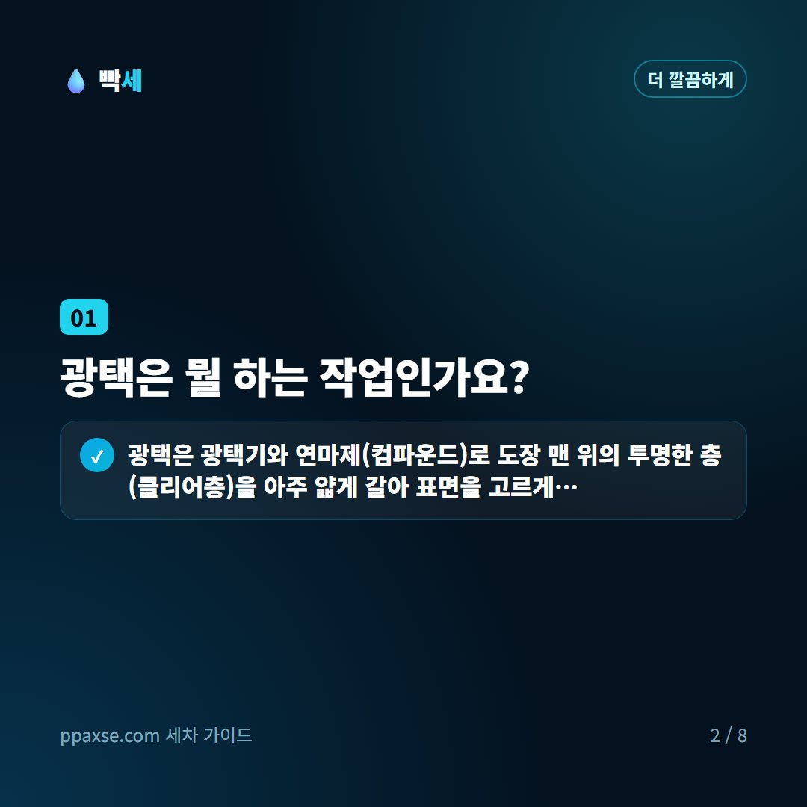
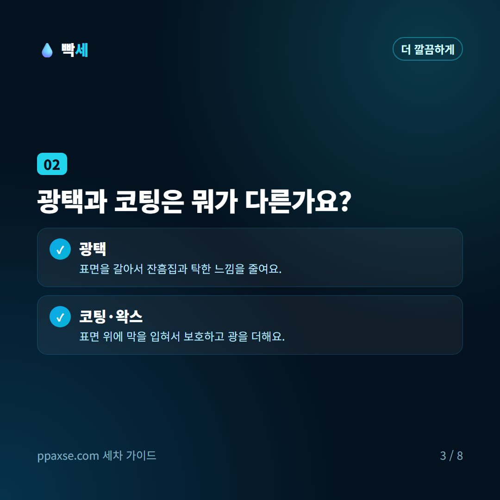
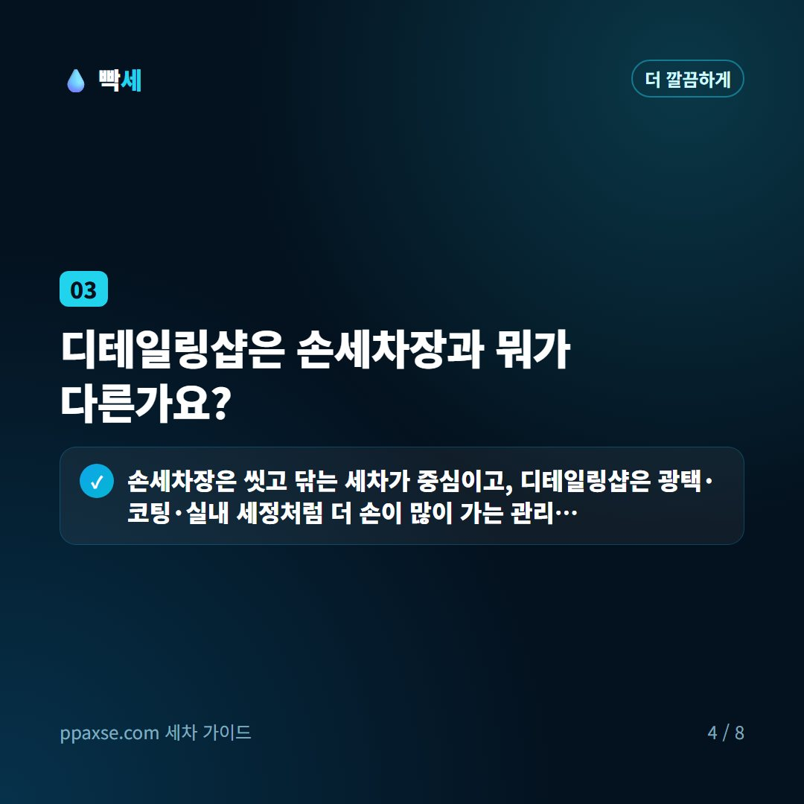
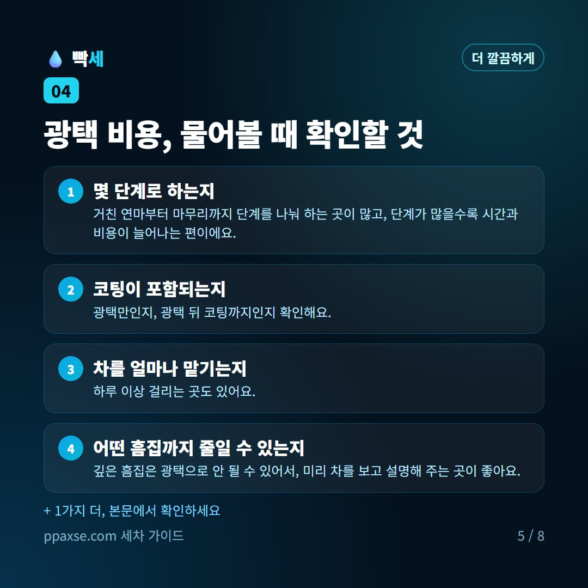
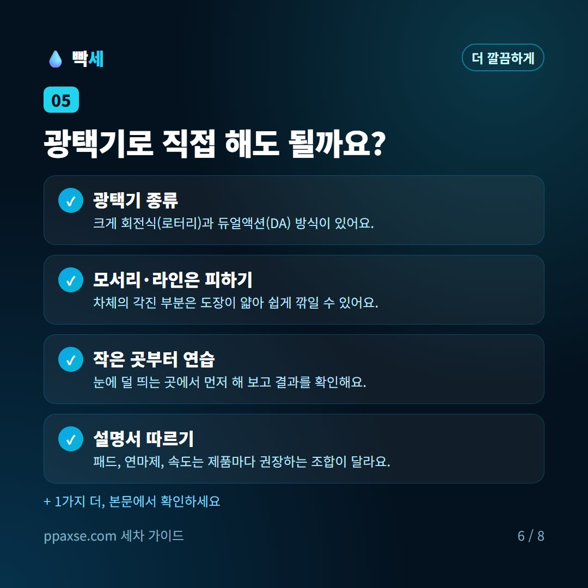

자동차 광택이란? 디테일링샵에 맡기기 전에 알아 둘 것
햇빛 아래에서 차를 보면 동그랗게 그어진 잔흠집(스월마크)이 보일 때가 있어요. 이런 흠집을 줄이고 광을 되살리는 작업이 자동차 광택이에요. 광택은 주로 디테일링샵에서 맡기는 경우가 많은데, 이 글에서는 맡기기 전에 알아 두면 좋은 것들을 정리했어요.

광택은 뭘 하는 작업인가요?

광택은 광택기와 연마제(컴파운드)로 도장 맨 위의 투명한 층(클리어층)을 아주 얇게 갈아 표면을 고르게 만드는 작업이에요. 흠집이 난 부분과 주변 높이를 맞춰서 흠집이 덜 보이게 하는 원리예요.
광택과 코팅은 뭐가 다른가요?

- 광택 — 표면을 갈아서 잔흠집과 탁한 느낌을 줄여요.
- 코팅·왁스 — 표면 위에 막을 입혀서 보호하고 광을 더해요. 흠집 자체를 없애지는 못해요.
그래서 업체에서는 광택으로 표면을 정리한 뒤 코팅을 올리는 순서로 많이 해요. 코팅을 직접 해 보고 싶다면 셀프세차장에서 유리막코팅제 쓰는 법을, 왁스는 물왁스 vs 고체왁스를 참고하세요.
디테일링샵은 손세차장과 뭐가 다른가요?

손세차장은 씻고 닦는 세차가 중심이고, 디테일링샵은 광택·코팅·실내 세정처럼 더 손이 많이 가는 관리 작업까지 하는 곳을 말할 때가 많아요. 다만 두 가지를 함께 하는 곳도 많고 부르는 이름도 제각각이라, 무엇을 해 주는지를 확인하는 게 가장 정확해요. 손세차가 궁금하다면 손세차란? 셀프세차와 차이를 먼저 보세요.
광택 비용, 물어볼 때 확인할 것

자동차 광택 비용은 업체, 차 크기, 차 상태, 작업 단계에 따라 많이 달라서 숫자로 말씀드리기 어려워요. 상담할 때 이렇게 물어보면 비교하기 쉬워요.
- 몇 단계로 하는지 — 거친 연마부터 마무리까지 단계를 나눠 하는 곳이 많고, 단계가 많을수록 시간과 비용이 늘어나는 편이에요.
- 코팅이 포함되는지 — 광택만인지, 광택 뒤 코팅까지인지 확인해요.
- 차를 얼마나 맡기는지 — 하루 이상 걸리는 곳도 있어요.
- 어떤 흠집까지 줄일 수 있는지 — 깊은 흠집은 광택으로 안 될 수 있어서, 미리 차를 보고 설명해 주는 곳이 좋아요.
- 작업 뒤 관리 방법 — 언제부터 세차해도 되는지, 어떤 세차를 피해야 하는지 물어봐요.
광택기로 직접 해도 될까요?

요즘은 개인용 광택기를 사서 직접 하는 분들도 있어요. 다만 광택은 도장을 깎는 작업이라 처음이라면 조심해야 해요.
- 광택기 종류 — 크게 회전식(로터리)과 듀얼액션(DA) 방식이 있어요. 회전식은 힘이 좋은 대신 익숙하지 않으면 한곳을 너무 깎기 쉬워서, 처음에는 듀얼액션을 쓰는 분들이 많아요.
- 모서리·라인은 피하기 — 차체의 각진 부분은 도장이 얇아 쉽게 깎일 수 있어요.
- 작은 곳부터 연습 — 눈에 덜 띄는 곳에서 먼저 해 보고 결과를 확인해요.
- 설명서 따르기 — 패드, 연마제, 속도는 제품마다 권장하는 조합이 달라요.
- 매장 규칙 확인 — 셀프세차장에서 광택기를 써도 되는지, 전기를 쓸 수 있는지는 곳마다 달라요. 먼저 물어보세요.
내 주변 디테일링샵 찾기
광택이나 코팅을 맡길 곳을 찾는다면 빡세 지도에서 세차장 종류를 디테일링으로 골라 볼 수 있어요. 세차장 정보는 이용자들이 함께 채워가고 있어요. 지역별 목록은 지역별 세차장 모음에서 볼 수 있어요.
다녀온 디테일링샵의 상담이 어땠는지("작업 전에 차 상태를 자세히 설명해 줘요" 같은 정보)를 한마디로 남겨 주시면 다음 사람에게 큰 도움이 돼요.
셀프세차·노터치·손세차를 종류별로 골라 보고, 폼건·온수·하부세차 같은 시설 정보도 확인할 수 있어요.
🗺️ 세차장 지도 열기✏️ 자주 가는 세차장에 한마디 남기기🎁 한마디를 남기면 가입 없이도 매주 기프티콘 추첨에 응모돼요.